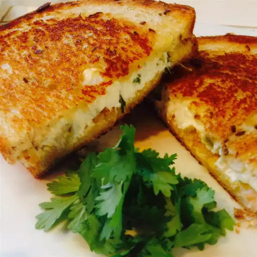

Jalepeno Popper Grilled Cheese Sandwich

Ingredients
- 2oz softened cream cheese
- 1 tbsp sour cream
- 10 pickled jalepeno pepper slices - chopped
- 2 ciabatta sandwich rolls
- 4 tsp butter
- 8 tortilla chips, crushed
- 1/2 cup shredded Colby-Monterey Jack cheese
Steps
- Step 1 Combine cream cheese, sour cream, and pickled jalapeno in a small bowl. Set aside.
- Step 2 Slice each roll in half, slice the tops off. Spread 1 teaspoon butter on both sides.
Place 1/2 of the cream cheese mixture, 1/2 of the crushed chips, and 1/2 of the shredded cheese on the bottom bun.
- Step 3 Grill until lightly browned and flip over, about 3 to 5 minutes; continue grilling until cheese
is melted and the second side is golden brown.